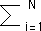

| For each i, either limq -> infinityhi(q) =
ci > 0 or limq -> infinityhi(q) = 0. |
| For all those i with limq -> infinityhi(q) =
ci > 0, we have seen ln(pi)/ln(ri) =
ln(pm)/ln(rm). |
| Rearrange the order of the terms so limq -> infinityhi(q) =
ci > 0 for i = 1, ..., K, and = 0 for
i = K+1, ..., N. |
| Then limq -> infinitypiqritauln(pi) = ciln(pi)
for i = 1, ..., K, and = 0 for
i = K+1, ..., N. |
| Then limq -> infinitydtau/dq
= |
| limq -> infinity-( |  |
piqritau(q)(ln(pi))/( |
|
piqritau(q)(ln(ri)) |
|
| = -((c1*ln(p1) + ... + cK*ln(pK)))/(c1*ln(r1) + ... + cK*ln(rK)) |
| = -((c1*a1 + ... + cK*aK)*ln(pm))/((c1*a1 + ... + cK*aK)*ln(rm)) |
| = -ln(pm)/ln(rm) = -alphamin. |
|
|
|
|
|
|